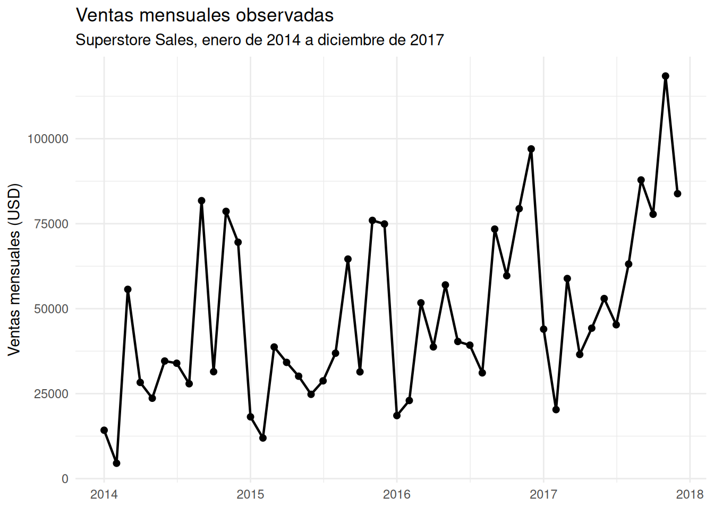
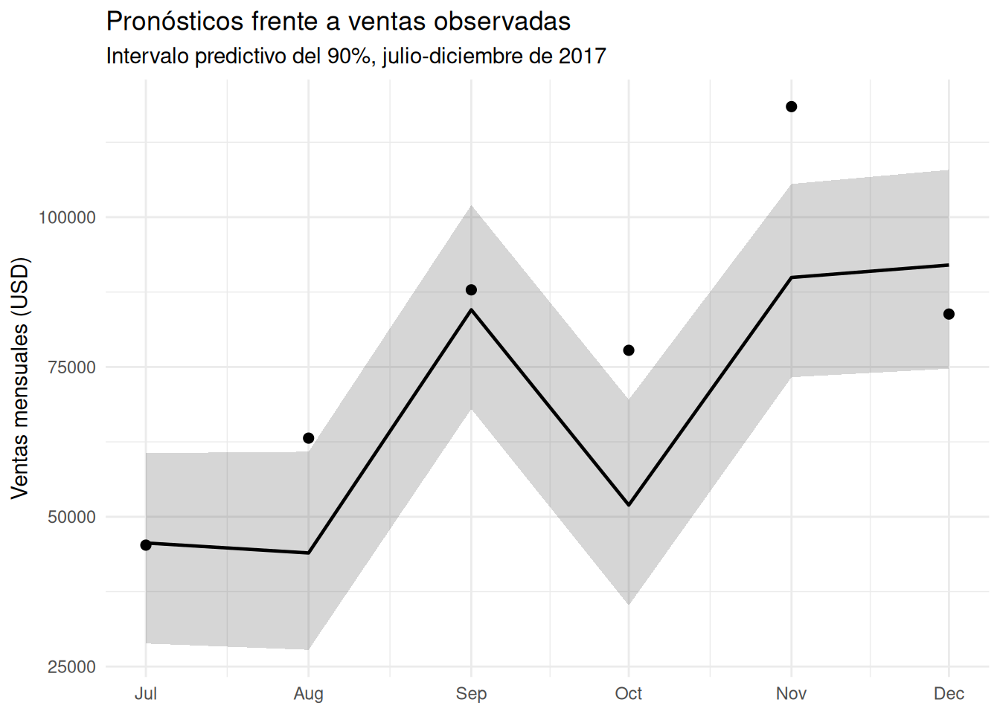
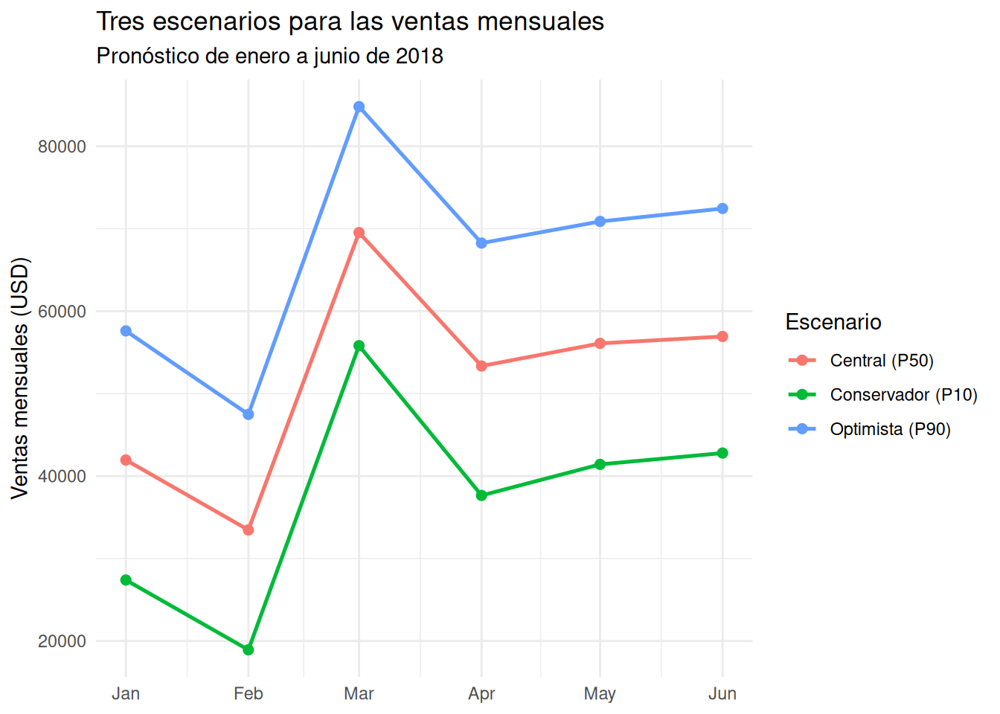
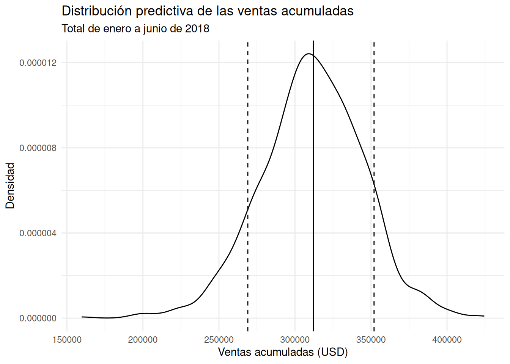

Del pronóstico a la decisión: cómo planificar bajo incertidumbre
Retail
Forecasting
Comunicación
Un pronóstico de ventas no es una cifra segura. Con R y un modelo bayesiano, construimos escenarios para planificar y reconocemos sus límites.
Un pronóstico no es un compromiso con una cifra
Cuando una empresa planifica sus compras, inventario, personal o flujo de caja, necesita anticipar cuánto podría vender. Sin embargo, una proyección única puede dar una falsa sensación de certeza: las ventas futuras no se conocen y el error de pronóstico puede ser importante.
En esta entrada damos el siguiente paso después de construir y evaluar un modelo: convertimos sus predicciones en referencias que ayuden a planificar. Trabajaremos con Superstore Sales, con registros de enero de 2014 a diciembre de 2017. El pronóstico de enero-junio de 2018 es un ejercicio retrospectivo: no es una previsión vigente, sino una forma de estudiar cómo se construyen y se interpretan escenarios con la información disponible al cierre de 2017. El objetivo no es adivinar exactamente las ventas de cada mes, sino estimar un rango plausible y explorar qué implicaría para la planificación.
La idea central es sencilla: un escenario no es una promesa; es una referencia condicionada por los datos y el modelo.
Qué muestran los datos
Agrupamos las ventas por mes y calculamos la suma de Sales, el promedio por registro y el número de filas de la base. En SQL, COUNT(*) cuenta filas; no equivale necesariamente al número de pedidos únicos (Order ID). El archivo contiene 9.994 filas y 21 columnas. Las fechas de pedido van del 3 de enero de 2014 al 30 de diciembre de 2017; después de agrupar, tenemos 48 observaciones mensuales.
La serie muestra una tendencia general ascendente, aunque con variaciones marcadas. Noviembre y diciembre suelen estar entre los meses de mayores ventas, mientras que enero y febrero tienden a ser más bajos. Esta regularidad aparente sugiere que el tiempo y el mes del año pueden aportar información útil para el pronóstico.
La tendencia no es perfectamente regular. Por eso, una línea que simplemente prolongue el crecimiento histórico sería insuficiente para representar los cambios entre meses. En este ejercicio combinamos dos componentes: el paso del tiempo y la diferencia promedio asociada a cada mes del año.
Antes de pronosticar, ponemos a prueba el modelo
Usamos un modelo bayesiano de regresión normal con la fórmula:
monthly_sales ~ time_index + month
El índice temporal aumenta en una unidad por cada mes observado. La variable month es categórica y enero queda como categoría de referencia. Así, el coeficiente de febrero representa la diferencia estimada entre febrero y enero, manteniendo constante el índice temporal. Los coeficientes de los meses no deben interpretarse como ventas mensuales completas: son diferencias respecto a enero.
Antes de ajustar el modelo final, reservamos los últimos seis meses de 2017 para una validación temporal. El modelo se ajusta con los primeros 42 meses y genera predicciones para julio-diciembre de 2017. Esta separación es más realista que evaluar el modelo con los mismos datos que utilizó para aprender.
En la ejecución registrada, el efecto temporal mediano fue de aproximadamente USD 472 adicionales por mes en el modelo de validación. La estimación no significa que las ventas necesariamente aumenten esa cantidad todos los meses; resume la tendencia estimada por el modelo, con incertidumbre y después de considerar el mes del año.
La tabla resume los valores observados y la mediana de las predicciones. El intervalo predictivo del 90% va del percentil 5 al percentil 95: contiene la incertidumbre sobre los parámetros y la variabilidad de nuevas observaciones que incorpora el modelo.
| Mes | Ventas observadas | Mediana predicha | Límite inferior 90% | Límite superior 90% |
|---|---|---|---|---|
| 2017-07 | 45264 | 45621 | 28845 | 60622 |
| 2017-08 | 63121 | 43955 | 27790 | 60853 |
| 2017-09 | 87867 | 84538 | 67999 | 102029 |
| 2017-10 | 77777 | 51950 | 35194 | 69544 |
| 2017-11 | 118448 | 89935 | 73291 | 105547 |
| 2017-12 | 83829 | 92010 | 74709 | 107897 |

La validación deja una advertencia importante: el modelo no captura todos los cambios. En agosto, octubre y noviembre, las ventas observadas quedaron por encima del límite superior del intervalo predictivo del 90%. En julio, septiembre y diciembre, los valores observados quedaron dentro del intervalo.
| Métrica | Resultado |
|---|---|
| Error absoluto medio (MAE) | USD 14.368,67 |
| Raíz del error cuadrático medio (RMSE) | USD 18.286,55 |
| Cobertura observada del intervalo predictivo del 90% | 3 de 6 meses (50%) |
El MAE resume el tamaño medio del error absoluto; el RMSE penaliza más los errores grandes. La cobertura indica en qué proporción de los meses evaluados el valor real cayó dentro del intervalo predictivo. Una cobertura del 50% no significa que el modelo tenga un 50% de exactitud. Significa que solo tres de las seis observaciones reservadas quedaron dentro de ese intervalo.
Seis meses son una muestra de validación pequeña, por lo que no conviene sacar conclusiones definitivas a partir de esta única prueba. Aun así, el resultado es una señal para actuar con prudencia: los escenarios que siguen sirven para explorar posibilidades, no para asumir que el pronóstico está perfectamente calibrado.
Tres escenarios para enero-junio de 2018
Con la validación revisada, ajustamos el mismo modelo usando los 48 meses disponibles. En esta ejecución, la mediana del efecto temporal fue de aproximadamente USD 619 por mes. El modelo también mantuvo diferencias estacionales: por ejemplo, las ventas de marzo, septiembre, noviembre y diciembre se estimaron por encima de enero, mientras que febrero quedó por debajo.
El intercepto tiene una interpretación concreta pero condicionada: corresponde a enero cuando time_index = 0, un punto de referencia al inicio de la escala temporal. No es el promedio histórico de todos los eneros. Para los meses futuros, las predicciones combinan ese punto de referencia, la tendencia estimada y el efecto correspondiente al mes.
Generamos 1.000 predicciones posteriores para cada uno de los seis meses siguientes. Para resumirlas usamos tres cuantiles:
- Conservador (P10): un valor que deja aproximadamente al 10% de las predicciones por debajo.
- Central (P50): la mediana predictiva.
- Optimista (P90): un valor que deja aproximadamente al 90% de las predicciones por debajo.
P10, P50 y P90 son referencias de una distribución predictiva, no tres futuros que el modelo pueda identificar con certeza. El escenario optimista no es una meta y el conservador no es un mínimo garantizado.
| Mes | Conservador (P10) | Central (P50) | Optimista (P90) |
|---|---|---|---|
| 2018-01 | 27394 | 41950 | 57612 |
| 2018-02 | 18926 | 33469 | 47486 |
| 2018-03 | 55819 | 69540 | 84815 |
| 2018-04 | 37656 | 53353 | 68263 |
| 2018-05 | 41422 | 56099 | 70888 |
| 2018-06 | 42796 | 56935 | 72458 |
En los resultados de esta ejecución, marzo presenta la mediana más alta del semestre, alrededor de USD 70.000, mientras que febrero tiene la más baja, cerca de USD 33.000. La secuencia mensual de escenarios conserva un patrón parecido: el modelo proyecta un nivel más bajo en febrero, un aumento en marzo y cifras intermedias entre abril y junio.

Del escenario mensual a una referencia para el semestre
Para una decisión de planificación, el total acumulado de seis meses puede ser más útil que revisar seis valores aislados. Sumamos los seis meses dentro de cada una de las 1.000 simulaciones predictivas. De esta manera, cada simulación produce un posible total para el semestre y la distribución de esos totales permite obtener nuevos cuantiles.
| Escenario acumulado | Ventas estimadas |
|---|---|
| Conservador (P10) | USD 268.435 |
| Central (P50) | USD 310.987 |
| Optimista (P90) | USD 354.404 |
La mediana de las ventas acumuladas es cercana a USD 311.000. En esta ejecución, el percentil 10 se sitúa alrededor de USD 268.000 y el percentil 90 cerca de USD 354.000. La distancia entre estos dos últimos valores —unos USD 86.000— ilustra que la incertidumbre acumulada puede ser relevante para una decisión operativa.

Esta distribución ayuda a cambiar la pregunta de planificación. En vez de preguntar «¿cuánto vamos a vender exactamente?», podemos preguntar «¿qué nivel de ventas conviene usar como referencia y cuánto margen de seguridad necesitamos si el resultado queda por debajo?».
Por ejemplo, una empresa podría usar el escenario central como referencia inicial de presupuesto y revisar si su liquidez soportaría un resultado cercano al escenario conservador. Una decisión sobre inventario podría necesitar además información sobre márgenes, tiempos de reposición, costos de almacenamiento y consecuencias de quedarse sin producto. El pronóstico de ventas por sí solo no responde esas preguntas, pero puede ser una pieza de la conversación.
Qué podemos concluir —y qué no—
Este ejercicio convierte una serie histórica en escenarios mensuales y acumulados, pero la calidad de las decisiones depende de reconocer sus límites.
- La estacionalidad parece importante. En los datos, algunos meses suelen presentar ventas mayores y otros menores. El modelo recoge esas diferencias, además de una tendencia temporal.
- La incertidumbre importa. Para el semestre, la distribución predictiva abarca desde aproximadamente USD 268.000 en P10 hasta USD 354.000 en P90.
- La validación invita a la cautela. Solo tres de los seis meses de prueba quedaron dentro del intervalo predictivo del 90%. El desempeño observado en esta muestra es una advertencia sobre la confiabilidad de los escenarios.
- Los escenarios no son decisiones automáticas. Para decidir compras, personal o caja, hay que combinar el pronóstico con costos, restricciones, márgenes y tolerancia al riesgo.
- El modelo es una simplificación. Usa una tendencia lineal, categorías mensuales y errores normales. No incorpora promociones, cambios de precios, disponibilidad de inventario, eventos extraordinarios ni otras variables que podrían explicar picos de ventas. Además, una distribución normal puede generar predicciones negativas en sus colas, aunque los cuantiles resumidos aquí sean positivos.
La conclusión no es que el modelo sepa lo que ocurrirá en 2018. La conclusión es que puede ofrecer una estructura explícita para hablar de futuros posibles, siempre que sus resultados se acompañen de validación y criterio empresarial. El valor del pronóstico no está en eliminar la incertidumbre, sino en hacerla visible para planificar mejor.
Apéndice: código completo del análisis
El código se presenta en orden cronológico. La ruta del CSV corresponde a la ejecución en Kaggle; para ejecutar el documento en otro entorno, debe cambiarse por la ubicación del archivo. Los fragmentos del apéndice no se ejecutan durante la renderización.
# Cargar las librerías necesarias
library(tidyverse)
library(lubridate)
library(DBI)
library(RSQLite)
library(rstanarm)
library(posterior)
library(bayesplot)
library(ggplot2)
options(scipen = 999)
# Conocer la ubicación del dataset en Kaggle
list.files("/kaggle/input", recursive = TRUE, full.names = TRUE)
# Asignar la ruta del dataset y cargarlo
path <- "/kaggle/input/datasets/jaimevillafuerte/store36/superstore_sales.csv"
superstore <- read_csv(path, guess_max = 10000, show_col_types = FALSE)
glimpse(superstore)
# Validar y convertir las fechas
fecha_patron_valido <- grepl(
"^[0-9]{1,2}/[0-9]{1,2}/[0-9]{4}$",
superstore$`Order Date`
)
order_date <- as.Date(superstore$`Order Date`, format = "%m/%d/%Y")
if (any(!fecha_patron_valido) || anyNA(order_date)) {
stop(
"Order Date no se convirtió correctamente. ",
"Revisar los valores y su formato antes de continuar."
)
}
superstore <- superstore |>
mutate(
order_date = order_date,
period = as.Date(format(order_date, "%Y-%m-01"))
)
validacion_fechas <- tibble(
fecha_minima = min(superstore$order_date),
fecha_maxima = max(superstore$order_date),
periodos_mensuales = n_distinct(superstore$period),
fechas_faltantes = sum(is.na(superstore$order_date))
)
validacion_fechas
# Crear una conexión SQLite en memoria y cargar la tabla
con <- dbConnect(SQLite(), ":memory:")
dbWriteTable(con, "superstore", superstore, overwrite = TRUE)
# Agregar las ventas por mes
monthly_sales <- dbGetQuery(
con,
"
SELECT
period,
SUM(Sales) AS monthly_sales,
AVG(Sales) AS average_sale,
COUNT(*) AS transactions
FROM superstore
GROUP BY period
ORDER BY period
"
)
# Preparar el índice temporal y la categoría mensual
monthly_sales <- monthly_sales |>
mutate(period = as.Date(period)) |>
arrange(period) |>
mutate(
time_index = row_number(),
month = factor(
format(period, "%m"),
levels = sprintf("%02d", 1:12)
)
)
# Gráfico de las ventas mensuales observadas
ggplot(monthly_sales, aes(x = period, y = monthly_sales)) +
geom_line(linewidth = 0.8) +
geom_point(size = 1.8) +
labs(
title = "Ventas mensuales observadas",
subtitle = "Superstore Sales, enero de 2014 a diciembre de 2017",
x = NULL,
y = "Ventas mensuales"
) +
theme_minimal()
# Separar los últimos seis meses para validación temporal
n_test <- 6
n_total <- nrow(monthly_sales)
if (n_total <= n_test) {
stop("No hay suficientes observaciones para separar entrenamiento y prueba.")
}
train_data <- monthly_sales |> slice(1:(n_total - n_test))
test_data <- monthly_sales |> slice((n_total - n_test + 1):n_total)
# Ajustar el modelo de validación
modelo_validacion <- stan_glm(
monthly_sales ~ time_index + month,
data = train_data,
family = gaussian(),
chains = 2,
iter = 1000,
seed = 1234,
refresh = 0
)
modelo_validacion
# Generar predicciones para los seis meses reservados
pred_test_draws <- posterior_predict(
modelo_validacion,
newdata = test_data,
draws = 1000
)
# Resumir mediana e intervalo predictivo del 90%
pred_test_summary <- tibble(
period = test_data$period,
actual = test_data$monthly_sales,
predicted_median = apply(pred_test_draws, 2, median),
predicted_lower = apply(pred_test_draws, 2, quantile, probs = 0.05),
predicted_upper = apply(pred_test_draws, 2, quantile, probs = 0.95)
)
pred_test_summary
# Graficar las predicciones y los valores observados
ggplot(pred_test_summary, aes(x = period)) +
geom_ribbon(aes(ymin = predicted_lower, ymax = predicted_upper),
alpha = 0.20) +
geom_line(aes(y = predicted_median), linewidth = 0.8) +
geom_point(aes(y = actual), size = 2) +
labs(
title = "Pronósticos frente a ventas observadas",
subtitle = "Validación temporal, julio-diciembre de 2017",
x = NULL,
y = "Ventas mensuales"
) +
theme_minimal()
# Calcular las métricas de validación
validation_metrics <- pred_test_summary |>
summarise(
MAE = mean(abs(actual - predicted_median)),
RMSE = sqrt(mean((actual - predicted_median)^2)),
coverage_90 = mean(
actual >= predicted_lower & actual <= predicted_upper
)
) |>
mutate(
MAE = round(MAE, 2),
RMSE = round(RMSE, 2),
coverage_90 = round(coverage_90, 2)
)
validation_metrics
validation_metrics |>
pivot_longer(
cols = everything(),
names_to = "Métrica",
values_to = "Resultado"
) |>
mutate(
Métrica = recode(
Métrica,
MAE = "Error absoluto medio (MAE)",
RMSE = "Raíz del error cuadrático medio (RMSE)",
coverage_90 = "Cobertura observada del intervalo del 90 %"
)
) |>
knitr::kable(
col.names = c("Métrica", "Resultado"),
caption = "Resumen de la validación temporal"
)
# Ajustar el modelo final con los 48 meses
modelo_final <- stan_glm(
monthly_sales ~ time_index + month,
data = monthly_sales,
family = gaussian(),
chains = 2,
iter = 1000,
seed = 1234,
refresh = 0
)
modelo_final
# Crear los seis meses futuros
future_data <- tibble(
period = seq.Date(
from = max(monthly_sales$period) %m+% months(1),
by = "month",
length.out = 6
)
)
future_data <- future_data |>
mutate(
time_index = max(monthly_sales$time_index) + row_number(),
month = factor(
format(period, "%m"),
levels = sprintf("%02d", 1:12)
)
)
future_data
# Generar predicciones posteriores para los seis meses futuros
future_draws <- posterior_predict(
modelo_final,
newdata = future_data,
draws = 1000
)
# Obtener escenarios mensuales P10, P50 y P90
future_scenarios <- tibble(
period = future_data$period,
conservative = apply(future_draws, 2, quantile, probs = 0.10),
central = apply(future_draws, 2, quantile, probs = 0.50),
optimistic = apply(future_draws, 2, quantile, probs = 0.90)
)
future_scenarios
# Convertir los escenarios a formato largo
future_scenarios_long <- future_scenarios |>
pivot_longer(
cols = -period,
names_to = "scenario",
values_to = "sales"
) |>
mutate(
scenario = recode(
scenario,
conservative = "Conservador (P10)",
central = "Central (P50)",
optimistic = "Optimista (P90)"
)
)
# Graficar los tres escenarios mensuales
ggplot(
future_scenarios_long,
aes(x = period, y = sales, color = scenario, group = scenario)
) +
geom_line(linewidth = 0.9) +
geom_point(size = 2) +
labs(
title = "Tres escenarios para las ventas mensuales",
subtitle = "Pronóstico de enero a junio de 2018",
x = NULL,
y = "Ventas mensuales",
color = "Escenario"
) +
theme_minimal()
# Sumar los seis meses dentro de cada simulación
future_total_draws <- rowSums(future_draws)
# Resumir escenarios de ventas acumuladas
total_scenarios <- tibble(
Escenario = c("Conservador (P10)", "Central (P50)", "Optimista (P90)"),
Ventas_acumuladas = c(
quantile(future_total_draws, 0.10),
quantile(future_total_draws, 0.50),
quantile(future_total_draws, 0.90)
)
) |>
mutate(Ventas_acumuladas = round(Ventas_acumuladas, 0))
total_scenarios
knitr::kable(
total_scenarios,
col.names = c("Escenario", "Ventas acumuladas"),
caption = "Referencias predictivas para el horizonte de seis meses"
)
# Graficar la distribución predictiva de ventas acumuladas
ggplot(
tibble(total_sales = future_total_draws),
aes(x = total_sales)
) +
geom_density() +
geom_vline(
xintercept = quantile(future_total_draws, 0.10),
linetype = "dashed"
) +
geom_vline(xintercept = quantile(future_total_draws, 0.50)) +
geom_vline(
xintercept = quantile(future_total_draws, 0.90),
linetype = "dashed"
) +
labs(
title = "Distribución predictiva de las ventas acumuladas",
subtitle = "Total de enero a junio de 2018",
x = "Ventas acumuladas",
y = "Densidad"
) +
theme_minimal()
# Guardar matrices de predicciones si se necesitan reutilizar
saveRDS(pred_test_draws, "pred_test_draws.rds")
saveRDS(future_draws, "future_draws.rds")
# Cerrar la conexión SQLite
dbDisconnect(con)